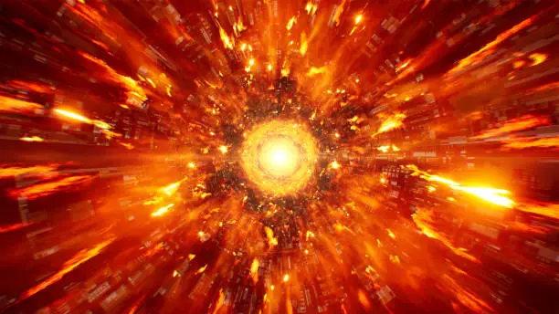
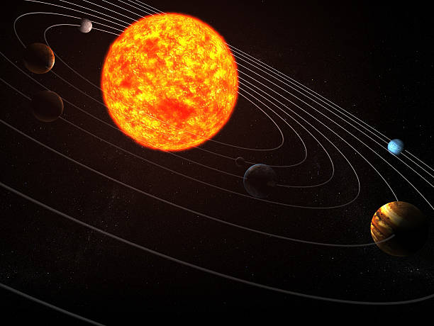
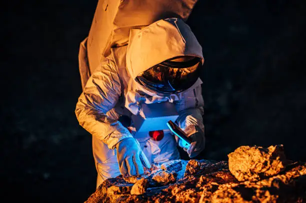

Mini Timeline
اكتشف عظمة الكون

الانفجار العظيم
- حدث قبل حوالي 13,8 مليار سنة
- هو النظرية الأكثر قبولا لبداية الكون
- من خلاله نشأت المادة والطاقة والزمان والمكان

تشكل المجرات
- المجرات تكونت من الغاز والغبار بعد الانفجا العظيم
- تحنوي على مليارات النجوم والأنظمة الكوكبية
- أكبر المجرات المعروفة نضم نريليونات النجوم

المجموعة الشمسية
- تتكون من الشمس و8كواكب وأقمارها
- اضافة الى الكويكبات والمذنبات والنيازك
- عمرها يقدر ب4,6 مليار سنة

استكشاف الانسان للفضاء
- أول انسان صعد للفضاء هو يوري غاغارين(1961)
- أول هبوط على سطح القمر كان سنة 1969(بعثة أبولو11)
- الآن ترسل تلسكوبات ومركبات الى المريخ والكواكب البعيدة